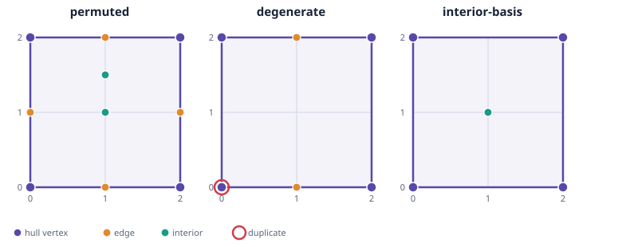

Preliminary exploratory result · source commit 7de5ad294ab8831ea3bcc2907f0355c602971d63

QuickHull is compared with five LP reducer variants. The related OPT-06 basis-reuse and OPT-07 ordered reducers retain their original identities. The new A43 safe adaptation wraps certificate-safe basis reuse with a mandatory full recheck; it does not implement the paper's per-candidate artificial-basis sequence or largest-norm tie rule. The A44 adaptation performs farthest-first incremental LP membership using normalized Chebyshev distance, then a mandatory full LP recheck. A44's paper ordering prose is ambiguous, and this report records the farthest-first interpretation. Neither is a Pascal reproduction. Timing covers each public reducer call; LP workspace creation and output validation are outside the interval. Each row below summarizes seven interleaved measured calls per fixture and method. Values are nanoseconds; raw trials and warmups remain in the linked JSONL.
| Fixture | Method | Trials | Median (ns) | Range (ns) |
|---|---|---|---|---|
| degenerate | A43-certificate-safe-basis-adaptation | 7 | 688,848 | 666,219–776,220 |
| degenerate | A44-incremental-LP-paper-adaptation | 7 | 1,138,070 | 1,134,508–1,277,195 |
| degenerate | basis-reuse-related-to-A43 | 7 | 46,724 | 43,512–67,677 |
| degenerate | geometric-quickhull | 7 | 8,939 | 8,102–9,150 |
| degenerate | lp-membership-baseline | 7 | 848,576 | 841,452–863,522 |
| degenerate | ordered-membership-related-to-A44 | 7 | 853,465 | 842,849–877,910 |
| interior-basis | A43-certificate-safe-basis-adaptation | 7 | 658,676 | 646,664–1,180,464 |
| interior-basis | A44-incremental-LP-paper-adaptation | 7 | 944,399 | 928,894–1,449,704 |
| interior-basis | basis-reuse-related-to-A43 | 7 | 45,397 | 37,086–65,791 |
| interior-basis | geometric-quickhull | 7 | 5,168 | 4,679–7,613 |
| interior-basis | lp-membership-baseline | 7 | 624,036 | 619,076–969,612 |
| interior-basis | ordered-membership-related-to-A44 | 7 | 632,975 | 614,258–716,366 |
| permuted | A43-certificate-safe-basis-adaptation | 7 | 1,038,336 | 1,013,472–1,702,391 |
| permuted | A44-incremental-LP-paper-adaptation | 7 | 1,466,116 | 1,449,633–1,933,636 |
| permuted | basis-reuse-related-to-A43 | 7 | 56,502 | 51,543–69,283 |
| permuted | geometric-quickhull | 7 | 15,365 | 14,388–19,137 |
| permuted | lp-membership-baseline | 7 | 1,206,724 | 1,188,216–1,289,556 |
| permuted | ordered-membership-related-to-A44 | 7 | 1,228,514 | 1,188,635–2,690,441 |
All 144 calls (18 warmups and 126 measured calls) passed the fixture checks. All coordinates are exact dyadic rationals. Passing these small cases does not establish general correctness for arbitrary point clouds. The reducers can retain different numbers of redundant points while representing the same hull.
btulshor.pas method was not run.